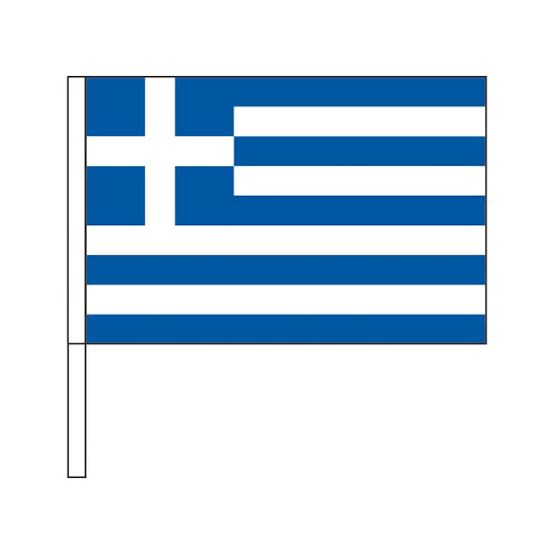

ギリシャ旅行8泊10日の旅
ギリシャはエーゲ海とイオニア海に浮かぶ数千の島々を擁するヨーロッパ南東部の国です。 日本からは直行便がない為、基本的に乗り継ぎをし16時間から20時間のフライトでの移動となります。 時差は7時間、サマータイムは6時間となり日本が進んでいます。気候は日本と同じで12月から3月は寒く、 6月から9月は夏になり30度を超える日も多くなります。ただカラッとしているので日本のような蒸し暑さはなく過ごしやすいです。
お知らせ
NEW! 2024.06.27 写真を追加しました。
NEW! 2024.06.27 ブログを更新しました。
NEW! 2024.06.27 ホームページをリニューアルしました。
mykonos
zakynthos